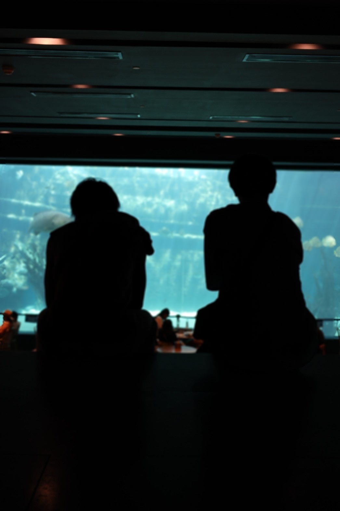

ご質問・ご相談などお気軽にお問い合わせください
お問い合わせするLife
平日は英語とIT、休日はセブ観光を
実際のセブ生活もお見せしたいと思います
セブでは日本では体験できない異国のリゾート気分を味わえました
10月セブに着いた時にはすでにフィリピンではクリスマスが始まっていました
また、年中夏というのもあって、10〜1月もずっと30°超えです
日本では考えられないですね汗
このような生活と文化を体験ができ、さらなる自分への、他への探究心が生まれました
セブは元々観光地としても有名
そのため観光者も多く、日本人も居る！
英語ができなくても比較的周りにいる日本人に助けを求められますよ
スグボ・メルカド
マゼランクロス
マニラ大聖堂
現地のフィリピン人とも友達を作りました🇵🇭
日本人が大好きな人がたくさん！
第一言語はタガログ語、第二言語は英語みたいですよ
でも自分の友達は日本語も話せる人が多かったです😳
やはりフィリピンでは経済的に生活に困難のもあって、窃盗が多いです汗
私も屋外バーで酔っている間に財布盗まれちゃいました（笑）
出歩く時は常にバックは前に持ち歩くこと。バックからは目を離さないように。 。 。
